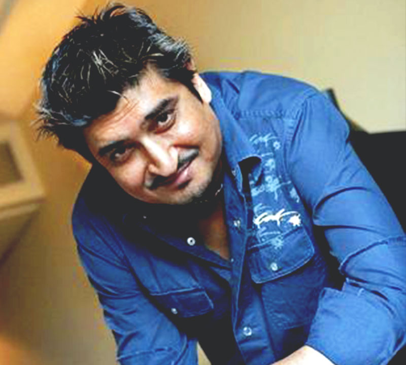

FESTA DE DIU
Nervous excitement is the best way to describe what we felt when we got the mandate to promote Asia's longest beach festival. High intense pressure from stakeholders and a festival which had eye-balls from VIPs and media houses from across the country had us on our toes for 4 whole months. But the immense success of the festival made it all worthwhile.
We developed a digital strategy that was hinged on a vibrant festival website that reflected the scale of Festa De Diu and in turn the beauty of Diu to the forefront. All digital marketing efforts - be it social, search, email or display - were then focused towards creating buzz around the festival and driving traffic to the website.
- Typography Used
-
Roboto x WEIGHTS
Primary Font
- Colors Used
Straight Outta' Comp.. the Website
We wanted to highlight the superstars performing at the festival without it being an information overload. The snippet below shows you how we created a neat design with a hover effect and pop-ups to show additional information on click if the user wants to read more. Hint: You can click on the boxes
CULTURAL EXTRAVAGANZA
Free access to various performances with your festival accommodation- 
Social Media Campaigns
We conceptualised and executed 3 high-impact social media campaigns during the 4 month period in order to create buzz around the festival. The contest we ran saw #FestaDeDiu become a trending topic in India for a day and led to a 10X increase in traffic to the website. Below are some of the stats from the social media campaigns and a sneak peak of the posts on Facebook.
- 1,234TOTAL ENTRIES
- 88,554PEOPLE TALKING ABOUT FESTA DE DIU
-
Visit Diu
November 4, 2015Ironman Milind Soman will be at #FestaDeDiu on January 3rd for the Run For Diu Marathon. Check out the complete event calendar and book your visit to the festival: http://goo.gl/TObue2
-
Visit Diu
December 29, 2015#FestaDeDiu is a 75 day celebration of music, art and culture on the serene beaches of Diu.
-
Visit Diu
November 4, 2015Catch musical maestro Kailash Kher LIVE at #FestaDeDiu on January 31st. Plan your trip today: http://goo.gl/x9Vzlq
-
Visit Diu
December 29, 2015#ContestAlert Tell us (via comments) why you want to be at #FestaDeDiu and WIN an ALL EXPENSE PAID trip to the festival. Participate NOW!
Approach For The Website.
'Modern' and 'Festive' were the words used by the client to describe the style they required. As a digital and design agency, we did what we do best by creating a vibrant website perfect for a beach festival. We made sure that the user experience was not affected with the information overload by giving it a clean look.
"Ditch Sunburn for Diu's longest beach festival. Diu is all set to crackle this winter with its longest beach festival."
India Today / November 30th, 2015
INDIAN OCEAN / Musician
DECEMBER 5, 2015Indian Ocean is an Indian rock band formed in New Delhi in 1990, who are widely recognized as the pioneers of the fusion rock genre in India. Susmit Sen, Asheem Chakravarty, Rahul Ram and Amit Kilam were band members till Chakravarty's death on 25 December 2009, after which Tuheen Chakravorty and Himanshu Joshi were officially inducted into the band as replacements. After the departure of Susmit Sen in 2013, Rahul Ram is the only founding member who appeared on the band's debut album Indian Ocean.
SHREYA GHOSHAL / SINGER
FEBRUARY 7, 2016Shreya Ghoshal is an Indian playback singer who has recorded songs for film music in Hindi, Tamil , Bengali , Telugu, Kannada, Malayalam, Nepali, Assamese, Bhojpuri, Gujarati, Marathi, Oriya, and Punjabi. She has received four National Film Awards, five Filmfare Awards (four for best playback singer), seven IIFA Award, six Screen Awards, and eight Filmfare Awards South till date. She has established herself as a leading female playback singer in Indian cinema.
SHUBHA MUDGAL / Singer
DECEMBER 1, 2015Shubha Mudgal is a well-known Indian singer of Hindustani classical music, Khayal, Thumri, Dadra, and popular Indian Pop music. She has been awarded the 1996 National Film Award for Best Non-Feature Film Music Direction for 'Amrit Beej', the 1998 Gold Plaque Award for Special Achievement in Music, at the 34th Chicago International Film Festival, for her music in the film Dance of the Wind (1997), and the Padma Shri in 2000. She is also close to movements like ANHAD and SAHMAT.
KAILASH KHER / Musician
JANUARY 31, 2016Kailash Kher is an Indian pop-rock singer with a music style influenced by Indian folk music. He has sung in 20 languages for Indian films, and in over 5000 songs for Bollywood.[1] He was inspired by the classical musician Pandit Kumar Gandharva, Pandit Hridaynath Mangeshkar, Pandit Bhimsen Joshi, and the Qawwali singer Nusrat Fateh Ali Khan. They remain his inspirations. He has won Filmfare Award for Best Male Playback Singer for the Bollywood movie Fanaa (2007), and has also won Filmfare Award for Best Male Playback Singer - Telugu for the film Mirchi.
BENNY DAYAL / Singer
DECEMBER 25, 2015Benny Dayal is one of the hottest names in the Bollywood music scene. With chart busters like KaiseMujhe, Lat Lag Gayee and BadtameezDil to his name, his performance is definitely something to look out for.
SUNIL PAL / Comedian
DECEMBER 5, 2015Sunil Pal is a popular Indian comedian, actor and voice actor, and the 2005 winner of The Great Indian Laughter Challenge on STAR One. Soon after the show followed many small roles in Bollywood movies. So far he has worked in seven films. His first major Hindi film, Bombay to Goa released in 2007, although he has played small roles in Hum Tum and Phir Hera Pheri.
NEERAJ SRIDHAR / Musician
DECEBER 12, 2016Neeraj Shridhar is an Indian singer-songwriter who was the lead vocalist of pop and rock group Bombay Vikings. He is a popular Bollywood playback singer, music director and lyricist. Bombay Vikings became popular with remix hits like "Kya Soorat Hai", "Woh Chali" and "Chod Do Anchal."
DHRUV SUFI / BAND
DECEMBER 14, 2015The Dhruv Sufi Project is one of the most popular Sufi /Folk bands in India. The band is directed by founder, Vocalist and Composer, Dhruv Sufi who is Trained in indian classical & Sufi Music.